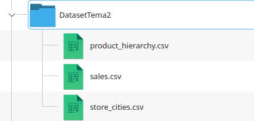
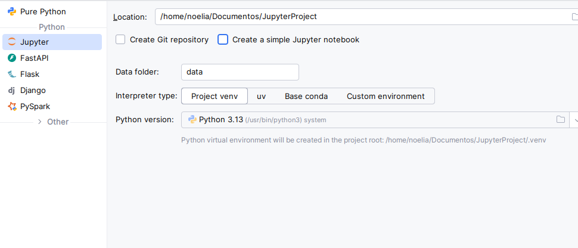
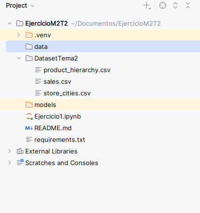

Ejercicio Propuesto
INTRODUCCIÓN
El ejercicio propuesto en esta lección tiene como objetivo aplicar de forma práctica los conceptos avanzados de Apache Spark vistos a lo largo del tema, utilizando un dataset realista de ventas retail. Se trata de un caso completo que integra distintas técnicas y transformaciones para construir un análisis detallado de las ventas, el comportamiento de los clientes, las sesiones de compra y el impacto de promociones.
ENUNCIADO
El dataset seleccionado es el fichero sales.csv del conjunto de datos publicado en Kaggle bajo el nombre Retail Sales Data. Tambien se puede descargar desde esta ubicación el fichero zip con los siguientes datasets:

Figura 1: Estructura de csv del ejercicio
Objetivos del ejercicio
Los objetivos principales de este caso práctico son los siguientes:
- Cargar y preparar un dataset real de ventas en Apache Spark.
- Calcular métricas de negocio a partir de los datos transaccionales.
- Aplicar funciones de ventana para rankings, medias móviles y sessionización.
- Utilizar joins especializados como
left_semi,left_antiybroadcast join. - Realizar un pivot para construir una tabla analítica por país y canal.
- Simular la asignación de promociones mediante joins por rango temporal.
- Interpretar los resultados obtenidos desde una perspectiva analítica y técnica.
Descripción general del dataset
El fichero sales.csv contiene información relativa a ventas realizadas en un entorno retail. Aunque la estructura exacta puede variar ligeramente según la versión descargada, el ejercicio parte de una estructura lógica formada por campos cuyo detalle se encuentra aquí
A partir de estos datos se pueden construir análisis tanto descriptivos como temporales, además de escenarios de enriquecimiento y segmentación.
PREPARACIÓN DEL ENTORNO
- Instalar Apache Spark en el entorno local (se puede usar una versión precompilada para Hadoop 3.x).
- Configurar un proyecto en Pycharm e incluir las dependencias de Spark.
- Asegurarse de que los datasets están accesibles desde el entorno de desarrollo (por ejemplo, colocándolo en la raíz del proyecto o en una carpeta específica).
- Asegurarse que las dependencias del entorno del cuaderno Jupyter se encuentran correctamente instaladas

Figura 2: Creación de nuevo proyecto en Pycharm

Figura 3: Estructura de ficheros del ejercicio
EJERCICIO PROPUESTO
Ejercicio práctico con Apache Spark sobre un dataset de ventas retail
En el cuaderno de Jupyter M2T2.ipynb se encuentra un ejercicio práctico del dataset retail con las operaciones detalladas durante el presente tema.
Se compone de las siguientes partes:
- Parte 1: Carga y preparación de datos: lectura del CSV, manejo de tipos de datos, tratamiento de valores nulos y creación de columnas derivadas como
total_amount. - Parte 2: Exploración y Transformación inicial de los datos: Para identificar valores nulos, conversión de tipos y generación de indicadores temporales
- Parte 3: Cálculo de métricas de negocio: Después de enriquecer los datos, se calculan KPIs como venta total por tienda, analisis por ciudad tipo de tienda....
- Parte 4: Pivot y análisis por promoción: construcción de una tabla pivot para analizar ingresos por promoción e interpretación de los resultados.
- Parte 5: Funciones de ventana: cálculo de medias móviles de ventas diarias por tienda y producto.
- Parte 6: Joins especializados: identificación de clientes activos/inactivos
- Parte 7: Simulación de promociones: asignación de promociones a transacciones mediante joins por rango temporal y análisis del impacto en las ventas.
- Parte 8: Interpretación de resultados: análisis de los resultados obtenidos desde una perspectiva tanto analítica como técnica, identificando patrones, insights y posibles acciones a partir de los datos mediante KPIs.
En este fichero está el programa en pyspark para ejecutar desde Pycharm.